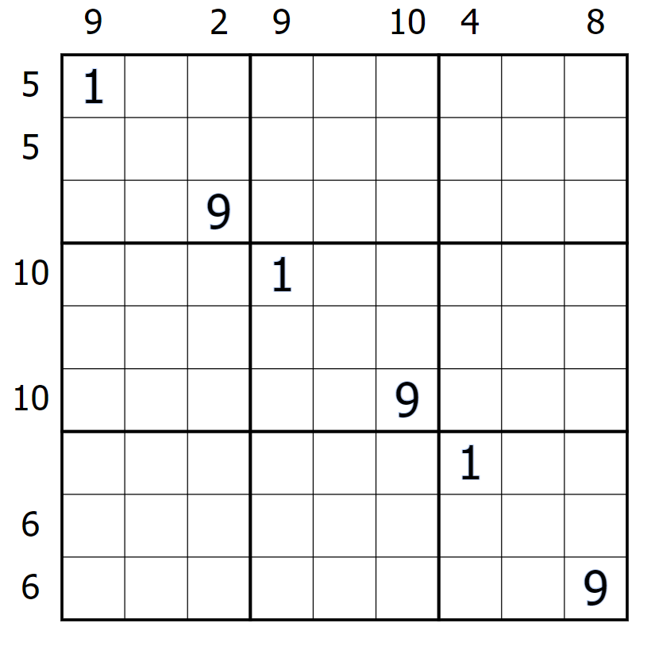

For those of you who don't like math, who just read this header as we speak, don't worry! As the name says there is maths involved in all of these variants, but they all follow the four basic mathematical operations (aka addition, subtraction, multiplication, division). The most common arithmetic variants usually limit themselves to addition.
Classic sudoku rules apply. Additionally, there are dotted "cages" with a small number on the grid--digits in these cages may not repeat, and must sum to the value indicated in the cage's corner.
Sudokus of this kind tend to not start out with many numbers, and are thus reliant on mathematical logic--that sounds fancy, but really, all you have to do is a bit of subtraction.
It's important to remember that every row, column, and box contains the numbers 1 to 9 exactly once--this means that every individual row, column, and box sums to 45. When you are given a cage restricted to a single one of these domains, you can subtract that cage's total from 45. This gives the remainder of the uncaged digits within that region, giving you a "pseudo-killer cage" for additional deductions.
45 - 10 - 24 = 11. This is the sum of the highlighted cells
within that region. This techniques does not apply to cages that cross over
columns, rows, or regions.
You can also deduce specific values in cages without having to do any maths.
The digits inside a cage are limited by the no-cage repeat rule, and further by
classic sudoku rules. For example, a 4 cage can only contain the digits 1 and 3;
likewise, a (3 celled) 24 cage can only contain the digits 7, 8, and 9.
A 3-celled 24 cage can only contain the digits 789, a 4-celled 10 cage can only contain the digits 1234, which leaves 5 and 6 in the gaps (which does, in fact, sum to 11, as we proved above).
Classic sudoku rules apply. Additionally, there are numbers outside of the grid pointing at a certain diagonal; this number gives the sum of every digit along its indicated diagonal. Unlike normal killers, digits can repeat on little killer diagonals if allowed by classic rules.
The logic of a little killer is a bit more difficult to describe fully.
Firstly, any little killer string that stays inside one box acts as a usual
killer cage--it sums to the indicated number with no repeats.
When it gets longer than 3 digits (i.e., going outside of a single region),
this allows for repeats--and because of that, you see numbers that normally wouldn't
even show up in your usual killer grid.
In cases of 4-6 digits, it's helpful to do a little "brute-forcing"
through numbers and derive deductions from those results. For example, for a large
number, identify the lowest digits and highest digits you can use to reach the
indicated total, and then use your results as a constrant on your
classic sudoku scanning (e.g., "I can't put a 9 in this box because [constraint
given by little killer diagonal]").
Cases of 7-9 digits are normally used to disambiguate scanning later on.
It's best not to worry about these until you have a good chunk of the grid filled
up through classic sudoku scanning--once you do have to worry about them, you
can usually use a mix of normal killer deduction and little-killer only
constraints.
Classic sudoku rules apply. Additionally, there are arrows attached to circles; the digits along the arrow must sum to the number inside the arrow's circle. Digits can repeat along arrows if allowed by classic rules. Circle values may have to be deduced by the player.
Arrows use a mix of little killer AND killer techniques, which have
already been covered in the articles above.
However, something unique about this variant is the fact that the totals
are inside the grid, and normally have to be deduced by the player. You
can deduce these totals by looking at how many digits the arrow spans, and
figuring out the lowest and highest numbers you could make with those squares.
The total itself can be further limited by the size of the arrow's circle
(it normally covers one cell, especially in simpler arrow sudokus, but can
occasionally cover 2 or even 3 cells).
Classic sudoku rules apply. Additionally, there are numbers outside of the grid,
aligned with various rows and columns; these numbers give the sum of the nearest X
boxes, X being the nearest digit to that clue.
For example, say you had a clue of 6. Valid solutions to this would be 24, or 321/312.
While the logic of an x-sums variant may sound intimidating, it probably has clearer deductive logic than most arithmetic variants.
X-sums are determined by the digit closest to a sum in that sum's said column/row. Think of this as a pseudo-killer cage that changes size in relation to that digit. As a visual:
Once you figure out what the first digit is, you can then treat it
as a normal killer cage (subtraction, deduction inside the cage).
In the case that you need to work backwards, then a bit of brute force is
involved. If a column/row's sum is small, then you can run through the possibilities
of different-sized "cages" and sort them out by possibility (e.g., "Can the
first digit of this be five? No, because [a] ...").
If the sum is large, then subtract the sum from 45 and identify the
pseudo-cage starting from the opposite side of the column. Let's go through
an example of this technique.
You can subtract 42 from 45, giving a result of 3. The killer
cage protruding from the right of this row must equal 3 (single 3, or a 12 pair).
This means that the first digit is either 7 or 8.
The possibilities for the right cage are limited by the 6 also coming
from the right, which means we must consider the first digit on the right as well.
It's impossible to start this sum with 1, and starting it with a 2 would force a 2/4
pair on the right, which is incompatible with both cases of the left pseudo-cage.
This narrows it down to 3, which fulfills the requirements of an 8-cell long
pseudo-cage. Therefore:
And, as a bonus, the 3-cell-long pseudo-cage on the right forces a 1/2 pair.
Classic sudoku rules apply. Additionally, there are numbers outside of the grid, aligned with various rows and columns; these numbers give the sum of every digit in-between that column/row's 1 and 9 (1 and 9 themselves excluded).
For this variant, it's crucial that you find out where the grid's 1s and 9s are first (as the killer logic plays in here). You can do this by finding an already existing 1 and 9, and if a sum has been assigned to that row/column, you can guess where its corresponding 1/9 goes in that row/column based on killer cage maximums and minimums (i.e., what's the least/most amount of digits I could meet this sum with?).
